Jika sebelumnya anda sudah mengetahui dasar-dasar dalam CorelDRAW, maka selanjutnya kita akan mempelajari dan mengenal lebih lanjut bagian-bagian dalam software CorelDRAW beserta fungsinya masing-masing.
Sangat penting bagi Anda untuk mempelajari
bagian ini, tujuannya masih dalam rangka mengenal dan lebih memahami fitur-fitur dari Corel agar kedepannya bisa lebih mahir menggunakannya. setelah mempelajari bagian ini Anda tidak perlu lagi membaca atau mencari tools mana yang akan digunakan
untuk membuat lingkaran, bentuk persegi, ataupun garis Anda sudah tahu tool mana yang harus digunakan. jadi ini akan sangat mengehemat waktu Anda

 Peta bagian-bagian CorelDRAW
Peta bagian-bagian CorelDRAW
-
Title Bar
Title Bar adalah area yang menampilkan judul / nama file yang sedang di buka.
-
Menu Bar
Menu Bar merupakan area yang berisi menu > dengan perintah-perintah yang dikelompokkan berdasarkan kategori yaitu : File, Edit, View, Layout, Arrange, Effects, Bitmaps, Text, Table, Tools, Windows dan Help.
-
Toolbar / Standar bar
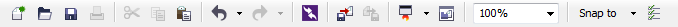
Toolbars berisi Kumpulan ikon yang memiliki fungsi tertentu dan digunakan untuk mempermudah pengaksesan sebuah perintah / tool.
-
Property Bar
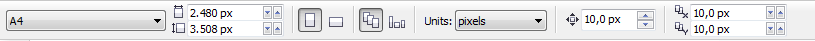
Adalah bagian yang berisi alat yang aktif (Active Tools) yang akan muncul jika pengguna mengklik tools tertentu atau membuat objek tertentu. Maka dari itu, Ptoperty Bar dapat berubah-ubah dan tidak sama antara satu tools dengan tools yang lain. Contoh jika pengguna mengklik Rectangle Tool, maka Property Bar yang ditampilkan adalah perintah-perintah yang berkaitan dengan tool tersebut.
-
Control Windows
Control Window merupakan Kumpulan tombol pengatur tampilan jendela CorelDRAW atau jendela Drawing yang Terdiri dari Minimize, Maximize, Restore, Close.
Pada versi CorelDRAW X7 sampai yang terbaru, fitur ini di hapus dan sebagai gantinya pihak pengembang menambahkan fitur baru yaitu 'Tab Navigation' yang berfungsi untuk memudahkan pengguna untuk berpindah ke file lain. -
Toolbox
Toolbox merupakan Bagian utama berupa Tools / alat untuk membuat, mengisi, dan memodifikasi suatu objek ataupun gambar dala CorelDRAW. berikut ini dan icon tool lengkap yang terdapat dalam toolbox:
-
Pick Tool

Tool default yang berfungsi untuk memilih obyek yang digambarkan dengan lambang anak panah. Pada prinsipnya untuk mengaktifkan semua sarana-sarana operasi yang terdapat dalam tampilan CorelDRAW yaitu untuk menunjuk perintah, menunjuk obyek dan mengaktifkannya.
-
Shape Tool
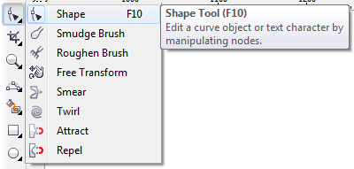
Tool yang berfungsi untuk melakukan pengeditan secara halus dan terutama untuk obyek kurva dan teks dengan memanipulasi jumlah node pada objek kurva atau text sesuai kebutuhan.
Tool lain yang terdapat di bagian ini rata-rata memiliki fungsi yang hampir sama, Anda bisa mencoba satu-persatu untuk melihat fungsinya -
Crop Tool

Crop Tool fungsinya adalah untuk memotong dan menghapus sebuah objek kurva ataupun bitmaps, Eraser, Knife Tools, dan Virtual Segment Delete juga memiliki fungsi yang sama yaitu menghapus objek tertentu hanya saja dengan cara kerja yang berbeda.
-
Zoom Tool
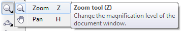
Zoom Tool digunakan untuk memperbesar atau memperkecil tampilan obyek secara positif dan negatif, perbesaran dengan perbandingan 1 : 1 serta perbesaran obyek terpilih dan sebagainya.
-
Freehand Tool

Freehand tool adalah tool untuk pembuatan berbagai model garis, kurva, dan menggambar bebas, dalam tool ini terdapat beberapa tool yang memiliki fungsi sama antara lain : 2-Point Line, Bezier, Artistic Media, Pen, B-Spline, Polyline, 3-Point Curve.
Kesemuanya merupakan tools yang digunakan untuk membuat garis, Anda tidak perlu menguasai semuanya cukup salah satu saja yang menurut Anda nyaman digunakan. Silahkan coba satu persatu tools nya untuk merasakan tingkat kesulitan penggunaannya -
Smart Fill Tool

Smart Fill digunakan untuk memberikan warna bidang dan warna outline sekaligus dan dapat memberikan efek duplikasi dan grouping pada bidang berbeda-beda dengan warna yang sama dari smart fill tool.
-
Retangle Tool

Tool ini digunakan untuk pembuatan obyek kotak, bujur sangkar, persegi panjang, atau segi empat.
-
Ellipse Tool
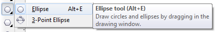
Tool ini digunakan untuk pembuatan obyek lingkaran baik berupa elips/oval, pie atau arc
-
Polygon Tool

Dan tool ini dipakai untuk membuat objek segitiga, segi empat, segi lima dan objek-objek polygon lainnya. Dalam tool ini terdapat pula tool Star, Compleks Star, Graph Paper, Spiral.
-
Basic Shape Tool
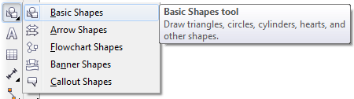
Nah Untuk Tool ini digunakan membentuk obyek bentuk dasar yang sudah disiapkan oleh program CorelDRAW secara default seperti bubble comment, Arrow Shape, Banner Shape dan lain-lain.
-
Text Tool

Sudah jelas tool ini digunakan untuk membuat teks artistik. Walaupun pada tool ini tidak terdapat flyout, tetapi tool ini mempunyai tool lain yaitu Paragraph Formatting dan Character Formatting pada sub menu text pada Property Bar standard.
-
Table Tool
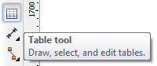
Table Tool digunakan untuk membuat table pada CorelDRAW, untuk mengatur banyaknya kolom dan baris terdapat di bagian Property Bar.
-
Parallel Dimension Tool
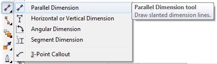
Fungsi dari Paraller Dimension Tool ini adalah untuk menggambar garis paraller yang menunjukan ukuran suatu objek ataupun luasnya.
-
Straigth-Line Connector Tool

Dan tool ini berfungsi untuk menggambar sebuah garis lurus untuk menghubungkan dua buah objek, tool ini hanya terdapat pada CorelDRAW versi X5 keatas
-
Blend Tool
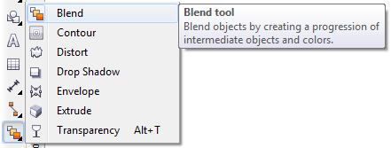
Blend Tool berfungsi untuk mencampurkan (Blend) dua buah objek dengan memadukan perubahan bentuk objek dan warna yang kompleks antara kedua obejek yang di campurkan.
Dalam Tool ini terdapat beberapa tool lain antara lain :- Contour Tool :
digunakan untuk membuat serangkaian bentuk konsentris dari sebuah objek - Distort Tool :
digunakan untuk mendistorsi objek dengan menerapkan efek push & pull, zipper dan efek twister. - Drop Shadow :
digunakan untuk membuat bayangan sebuah objek kurva, text, ataupun gambar - Envelope :
digunakan untuk mengubah bentuk suatu objek atau text dengan mengubah atau menyeret node dari bentuk aslinya. - Extrude :
digunakan untuk membuat efek 3D pada suatu objek, tool ini juga digunakan untuk membuat efek Long Shadow pada Flat Desain. - Transparency :
digunakan untuk memberikan efek transparansi di sebuah objek baik kurva, text, ataupun bitmaps
- Contour Tool :
-
Color Eyedropper Tool

Tool ini digunaka untuk mengambil sampel atau contoh warna yang berupa prosentase campuran warna dari obyek terpilih dan diterapkan pada obyel lain agar warnanya sama.
-
Outline Pen Tool
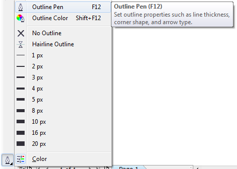
Tool untuk mengatur segala sesuatu tentang outline atau garis sisi luar obyek meliputi ketebalan, warna, menghapus outline dan sebagainya.
-
Fill Tool
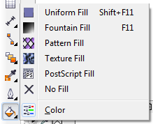
Tool untuk mengatur segala sesuatu tentang fill obyek atau warna dari obyek meliputi pengaturan warna, menghapus fill dan sebagainya.
-
Interactive Fill Tool

Tool untuk membuat gradasi warna pada sebuah objek kurva atau text di CorelDRAW. Mesh fill juga menghasilkan graadsi warna hanya saja penggunaannya lebih komplek, namun jika Anda sudah mahir hasil gradasi yang dihasilkan bisa membuat desain Anda seperti terlihat realistik
-
Drawing window
Drawing Window merupakan Area diluar Drawing Page yang dapat juga digunakan untuk membuat atau memodifikasi objek.
-
Drawing Page
Drawing Page merupakan Area lembar kerja berbentuk persegi dengan ukuran yang bisa diubah-ubah mengacu pada ukuran standar kertas, dimana setiap objek gambar yang terdapat di area tersebut dapat dicetak. Area ini juga dikenal sebagai Printable Area, dan Objek yang terdapat diluar dari area ini tidak akan ikut tercetak dan akan otomatis terpindah ke Master Page.
-
Ruler
Ruler merupakan Batas horizontal dan vertikal yang digunakan untuk menentukan ukuran dan posisi objek pada sebuah gambar.
-
Color Palette
Color Palette merupakan bagian yang berisi contoh warna Default yang dapat digunakan untuk langsung mewarnai suatu objek kurva atau text.
-
Document Navigator
Document Navigator adalah Area di pojok kiri bawah Drawing Window yang berisi pengontrol untuk berpindah dari satu halaman ke halaman gambar yang lain.
-
Status Bar
Status Bar Menampilkan status objek yang sedang aktif dan posisi kursor di jendela serta warna yang digunakan pada objek tersebut
-
Navigator
Navigator adalah Tombol pada pojok kanan bawah Drawing Window yang berguna untuk membuka tampilan Drawing Window dalam ukuran yang kecil. Tombol tersebut dapat membantu Anda untuk bergerak pada gambar yang Anda kerjakan cara menggunakannya hanya dengan mengeklik kiri mouse dan menahannya.
-
Docker
Jendela yang berisi perintah dan setting (pengaturan) yang relevan pada alat (tool) tertentu. Semisal Objeck Manager, Color Pallete, Text Property, Fillet and Scallop dan sebagainya, Anda bisa menambahkan atau mengurangi docker sesuai keinginan.
-
Tab Navigation
Fitur ini hanya tersedia di versi X7 sampai terbaru, berfungsi untuk memudahkan pengguna menambah atau berpindah ke lembar kerja lain tanpa perlu meload ulang software Corel. Hanya dengan sekali klik pengguna bisa leluasa berpindah ke file lain untuk copy paste atau lainnya.
Perbedaannya dengan Document Navigator adalah Document Navigator menambah atau berpindah ke halaman lain tapi masih dalam satu file yang sama, sedangkan Tab Navigation digunakan untuk berpindah atau menambah fle lembar kerja baru.